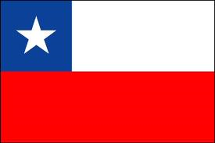
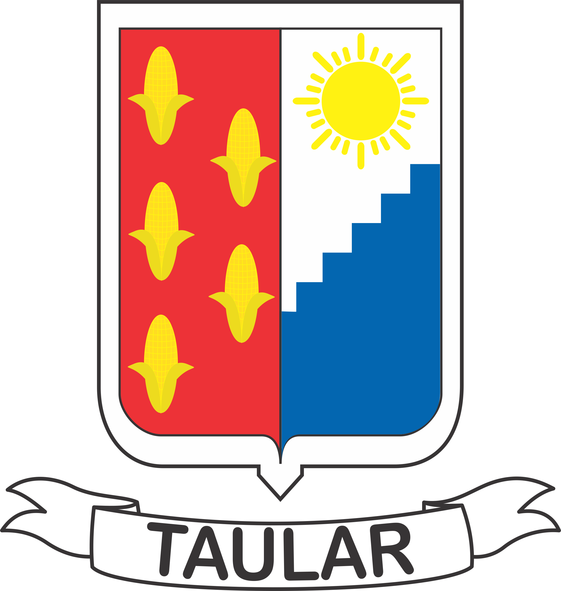

Tegucigalpa MDC
27 - Diciembre - 1994
Soltero
+504 9599-6134
joelpineda94@gmail.com
| 18 años |
|
Primaria Escuela República de Chile 2001 - 2006 |
Secundaria Instituto Tecnológico Taular 2007 - 2011 Bachiller en Ciencias y Letras |
Universidad UNITEC 2012 - 2013 Ingeniería en Sistemas Computacionales |